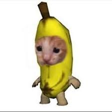

Gato Banana

Ficha Técnica:
Nome: Gato Banana
Nomes alternativos:Gato Chorão, Gato Triste, Gato Birrento
Raça: Gato
Tipo da raça: Fruta
Nivel de ameaça: Nulo
Características físicas:
- Gato permanentemente envolvido em uma casca de banana orgânica
- A casca faz parte do seu corpo
- Expressão facial que alterna entre extrema tristeza e alegria súbita
- Olhos grandes com alta capacidade de liberação de lágrimas
- Tamanho de uma banana
- Possui uma grande variedade de gatos desse tipo, visto que existem gatos para cada variedade de banana
Capacidades:
- Aparentam possuir reservatório de água que se mantém infinito enquanto estão tristes
- Normalmente, gatos desse tipo não possuem capacidades relevantes além da citada acima
- Quando feliz, provoca euforia incontrolável nos presentes
- Alternância emocional imprevisível e extremamente rápida
- Imune a qualquer tentativa de estabilização emocional química
- Alguns espécimes desenvolveram a capacidade de alterar o emocional em uma grande área. Não aparentam controle do poder, tornando ainda mais arriscado. NÃO MANDAR AGENTES EMOCIONALMENTE FRACOS.
Fraquezas:
- Fisicamente inofensivo, não possuindo qualquer capacidade ofensiva
- Completamente dependente de comida oferecida por outros
- Música calma pode estabilizar suas emoções temporariamente
Como contê-lo:
O Gato Banana não possui nenhum grau de ameaça, portanto não há necessidade de o conter. Caso seja necessário, mantenha-o em uma sala isolada com música ambiente tocando constantemente. Funcionários que trabalham com ele devem fazer rodízio a cada 2 horas para evitar exaustão emocional.
AVISO: Três funcionários pediram demissão após ficarem estressados demais. Não recomendamos que pessoas com histórico de depressão ou ansiedade trabalhem com ele. MUITO MENOS COM HISTÓRICO DE AGRESSIVIDADE.
Relato da Agente Camila:
Agente Camila encontrou o Gato Banana abandonado em uma feira livre.
"Ele estava numa caixa de frutas, o que achamos irônico. Quando estávamos perto, ouvimos alguém chorando. Inicialmente pensamos ser uma criança ou alguém sendo atacado, mas acabou sendo apenas um gato. Claro, no começo tratamos como toda a cautela que poderiamos ter naquele momento. Mas aquela coisa era só um gato banana. Ele estava triste porque estava sozinho sem outros gatos bananas. O pegamos para o levar para a contenção, mas ele NÃO PAROU DE CHORAR. Quando finalmente chegamos na base, descobrimos que haviam outros gatos banana recém contidos e o colocamos juntos. E então começaram a chorar por não estarem mais sozinhos. Não quero nunca mais ter contato com aquilo"
- Agente Camila, depoimento 001-23B
Variações:
Há rumores de um "Gato Banana Feliz" que estaria permanentemente alegre, mas ainda não foi confirmado.
Também há alguns gatos banana que afetam o ambiente ao seu redor. Alguns agentes já foram afetados por isso. mas não parece haver sequelas.
História:
A história do Gato Banana ainda está sendo documentada.